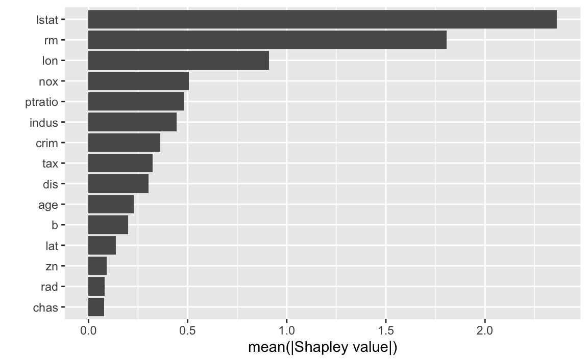

In this vignette we compare fastshap with the shap Python module. In particular, we’ll compare fastshap::explain() with the shap.SamplingExplainer() method which provides the same Monte Carlo approach to computing ApproxSHAP (ApproxSHAP) values described in Štrumbelj and Kononenko (2014); in particular, see Algorithm 1. We’ll also compare fastshap::explain() with the results from shap.TreeExplainer() which produces exact Shapley (ExactSHAP or TreeSHAP if referring specifically to the implementation for tree-based models) values for a wide variety of tree-based models in Python (Lundberg et al. 2019). The comparisons will be made on a random forest trained to the Boston housing data set (the data are available in the notebooks/data directory within this repository).
The shap library treats the specified number of Monte Carlo repetitions as a total and distributes them across the feature columns according to variance (features with higher variance get more of the total). There does not seem to be any way to override this; to me, this is confusing and not optimal in all cases. fastshap on the other hand, uses the same number of Monte Carlo repetitions on all columns (though, this can be wasteful compared to shap’s approach). Hence, it is difficult to compare the actual computation time between the two packages in a fair way.
TreeSHAP (provided by shap.TreeExplainer()) does not scale well with tree depth and will likely take longer than fastshap’s fast Monte Carlo approach for bagged decision trees and random forests (where trees are intentionally grown deep).
fastshap is quicker compared to most other implementations of ApproxSHAP because it makes far less calls to the underlying prediction function by working on an entire column of ApproxSHAP values at a time. It’s also partially written in C++ and makes efficient use of logical subsetting.
To start, we’ll load all the required packages and prep the Boston housing data:
# Load required packages
library(fastshap) # for explain() function
library(ggplot2) # for autoplot() function
library(ranger) # for efficiently fitting random forests
# Set up the Boston housing data
boston <- read.csv("data/boston.csv")
X <- data.matrix(subset(boston, select = -cmedv))Next, we train a random forest and create a simple prediction wrapper to be used by explain():
# Train a random forest
set.seed(944) # for reproducibility
(rfo <- ranger(cmedv ~ ., data = boston))## Ranger result
##
## Call:
## ranger(cmedv ~ ., data = boston)
##
## Type: Regression
## Number of trees: 500
## Sample size: 506
## Number of independent variables: 15
## Mtry: 3
## Target node size: 5
## Variable importance mode: none
## Splitrule: variance
## OOB prediction error (MSE): 10.11608
## R squared (OOB): 0.8800166# Prediction wrappers
pfun <- function(object, newdata) {
predict(object, data = newdata)$predictions
}Finally, we compute ApproxSHAP values for all 506 training observations using the fastshap::explain() function with \(B = 50\) Monte Carlo repetitions, and plot a summary of the results:
# Comput ApproxSHAP values
set.seed(945) # for reproducibility
t1 <- system.time( # time the results
res_fastshap <- explain(rfo, X = X, nsim = 100, pred_wrapper = pfun)
)
# Print results
res_fastshap## # A tibble: 506 x 15
## lon lat crim zn indus chas nox rm age
## <dbl> <dbl> <dbl> <dbl> <dbl> <dbl> <dbl> <dbl> <dbl>
## 1 -1.06 0.147 0.199 0.0583 0.809 -0.0297 0.136 -0.699 0.0322
## 2 -1.00 -0.0290 0.0835 -0.0341 -0.147 -0.0132 0.246 -0.714 -0.165
## 3 -0.809 0.0577 0.357 0.00292 -0.129 -0.0399 0.645 4.49 0.103
## 4 -0.733 0.00357 0.340 -0.0139 1.01 -0.00726 0.480 2.91 0.275
## 5 -0.740 0.186 0.349 -0.0416 1.53 -0.0297 0.776 4.39 0.299
## 6 -0.553 0.0993 0.400 0.00156 1.35 -0.0362 0.465 -0.602 0.213
## 7 -0.751 0.172 0.408 -0.0231 -0.143 -0.0348 0.229 -1.51 0.333
## 8 -0.832 0.102 0.550 -0.0567 -0.289 -0.0749 0.337 -0.917 -0.315
## 9 -1.13 -0.129 0.140 -0.0549 -0.258 -0.0442 0.129 -2.14 -0.606
## 10 -0.759 -0.121 0.305 -0.0634 -0.309 -0.0375 0.211 -1.29 -0.256
## # … with 496 more rows, and 6 more variables: dis <dbl>, rad <dbl>,
## # tax <dbl>, ptratio <dbl>, b <dbl>, lstat <dbl>
First we import the required modules and prep the Boston housing data (which we assume are available in data/boston.csv):
import logging
import pandas as pd
import sklearn
import shap
import time
# Ignore basic logging info from shap
log = logging.getLogger("shap")
log.setLevel(logging.ERROR)
# Set up the BOston housing data
boston = pd.read_csv("data/boston.csv")
X = boston.drop("cmedv", axis=1)
y = boston.cmedvNext, we train a random forest to the Boston housing data:
# Train a random forest
rfo = sklearn.ensemble.RandomForestRegressor(n_estimators=500, oob_score=True, random_state=822)
rfo.fit(X, y)## RandomForestRegressor(bootstrap=True, criterion='mse', max_depth=None,
## max_features='auto', max_leaf_nodes=None,
## min_impurity_decrease=0.0, min_impurity_split=None,
## min_samples_leaf=1, min_samples_split=2,
## min_weight_fraction_leaf=0.0, n_estimators=500, n_jobs=1,
## oob_score=True, random_state=822, verbose=0, warm_start=False)## 0.8857754578188167Finally, we compute approximate and exact Shapley values for all 506 training observations using the shap.SamplingExplainer() and shap.TreeExplainer() methods; for the sampling approach, we use \(B = 100\) Monte Carlo repetitions (Note: while we specify 100 Monte Carlo repetitions be used, this numb)er, as far as I can tell, represents the total number of repetitions to use across all the features. It appears that shap will divvy up the specified number of repetitions across the features according to variance.):
# Initialize explainer
rfo_explainer_sampling = shap.SamplingExplainer(rfo.predict, X)
rfo_explainer_tree = shap.TreeExplainer(rfo)
# Compute ApproxSHAP values and time the results
start = time.time()
res_shap_samp = rfo_explainer_sampling.shap_values(X, nsamples=100)##
0%| | 0/506 [00:00<?, ?it/s]
0%| | 1/506 [00:00<02:16, 3.70it/s]
0%| | 2/506 [00:00<02:17, 3.67it/s]
1%| | 3/506 [00:00<02:20, 3.58it/s]
1%| | 4/506 [00:01<02:18, 3.62it/s]
1%| | 5/506 [00:01<02:16, 3.67it/s]
1%|1 | 6/506 [00:01<02:15, 3.70it/s]
1%|1 | 7/506 [00:01<02:14, 3.70it/s]
2%|1 | 8/506 [00:02<02:17, 3.61it/s]
2%|1 | 9/506 [00:02<02:15, 3.67it/s]
2%|1 | 10/506 [00:02<02:14, 3.70it/s]
2%|2 | 11/506 [00:02<02:13, 3.72it/s]
2%|2 | 12/506 [00:03<02:12, 3.73it/s]
3%|2 | 13/506 [00:03<02:12, 3.72it/s]
3%|2 | 14/506 [00:03<02:11, 3.73it/s]
3%|2 | 15/506 [00:04<02:10, 3.75it/s]
3%|3 | 16/506 [00:04<02:10, 3.75it/s]
3%|3 | 17/506 [00:04<02:10, 3.74it/s]
4%|3 | 18/506 [00:04<02:10, 3.75it/s]
4%|3 | 19/506 [00:05<02:09, 3.76it/s]
4%|3 | 20/506 [00:05<02:10, 3.74it/s]
4%|4 | 21/506 [00:05<02:09, 3.74it/s]
4%|4 | 22/506 [00:05<02:13, 3.63it/s]
5%|4 | 23/506 [00:06<02:12, 3.65it/s]
5%|4 | 24/506 [00:06<02:11, 3.67it/s]
5%|4 | 25/506 [00:06<02:10, 3.70it/s]
5%|5 | 26/506 [00:07<02:09, 3.71it/s]
5%|5 | 27/506 [00:07<02:08, 3.71it/s]
6%|5 | 28/506 [00:07<02:08, 3.71it/s]
6%|5 | 29/506 [00:07<02:08, 3.72it/s]
6%|5 | 30/506 [00:08<02:12, 3.58it/s]
6%|6 | 31/506 [00:08<02:10, 3.63it/s]
6%|6 | 32/506 [00:08<02:09, 3.65it/s]
7%|6 | 33/506 [00:08<02:08, 3.67it/s]
7%|6 | 34/506 [00:09<02:07, 3.70it/s]
7%|6 | 35/506 [00:09<02:06, 3.73it/s]
7%|7 | 36/506 [00:09<02:05, 3.74it/s]
7%|7 | 37/506 [00:10<02:05, 3.74it/s]
8%|7 | 38/506 [00:10<02:04, 3.75it/s]
8%|7 | 39/506 [00:10<02:04, 3.74it/s]
8%|7 | 40/506 [00:10<02:03, 3.76it/s]
8%|8 | 41/506 [00:11<02:03, 3.77it/s]
8%|8 | 42/506 [00:11<02:02, 3.78it/s]
8%|8 | 43/506 [00:11<02:03, 3.76it/s]
9%|8 | 44/506 [00:11<02:06, 3.64it/s]
9%|8 | 45/506 [00:12<02:05, 3.67it/s]
9%|9 | 46/506 [00:12<02:04, 3.70it/s]
9%|9 | 47/506 [00:12<02:03, 3.72it/s]
9%|9 | 48/506 [00:12<02:02, 3.73it/s]
10%|9 | 49/506 [00:13<02:02, 3.73it/s]
10%|9 | 50/506 [00:13<02:01, 3.74it/s]
10%|# | 51/506 [00:13<02:01, 3.74it/s]
10%|# | 52/506 [00:14<02:06, 3.60it/s]
10%|# | 53/506 [00:14<02:03, 3.65it/s]
11%|# | 54/506 [00:14<02:07, 3.54it/s]
11%|# | 55/506 [00:14<02:04, 3.61it/s]
11%|#1 | 56/506 [00:15<02:02, 3.66it/s]
11%|#1 | 57/506 [00:15<02:01, 3.69it/s]
11%|#1 | 58/506 [00:15<02:01, 3.70it/s]
12%|#1 | 59/506 [00:15<01:59, 3.73it/s]
12%|#1 | 60/506 [00:16<01:59, 3.74it/s]
12%|#2 | 61/506 [00:16<01:59, 3.73it/s]
12%|#2 | 62/506 [00:16<01:58, 3.76it/s]
12%|#2 | 63/506 [00:17<01:57, 3.77it/s]
13%|#2 | 64/506 [00:17<01:57, 3.75it/s]
13%|#2 | 65/506 [00:17<01:57, 3.76it/s]
13%|#3 | 66/506 [00:17<01:57, 3.75it/s]
13%|#3 | 67/506 [00:18<02:00, 3.65it/s]
13%|#3 | 68/506 [00:18<01:59, 3.68it/s]
14%|#3 | 69/506 [00:18<01:58, 3.69it/s]
14%|#3 | 70/506 [00:18<01:57, 3.71it/s]
14%|#4 | 71/506 [00:19<01:57, 3.71it/s]
14%|#4 | 72/506 [00:19<01:56, 3.72it/s]
14%|#4 | 73/506 [00:19<01:56, 3.72it/s]
15%|#4 | 74/506 [00:20<01:59, 3.61it/s]
15%|#4 | 75/506 [00:20<01:58, 3.64it/s]
15%|#5 | 76/506 [00:20<01:57, 3.67it/s]
15%|#5 | 77/506 [00:20<01:56, 3.69it/s]
15%|#5 | 78/506 [00:21<01:55, 3.72it/s]
16%|#5 | 79/506 [00:21<01:54, 3.74it/s]
16%|#5 | 80/506 [00:21<01:54, 3.72it/s]
16%|#6 | 81/506 [00:21<01:53, 3.74it/s]
16%|#6 | 82/506 [00:22<01:52, 3.76it/s]
16%|#6 | 83/506 [00:22<01:52, 3.76it/s]
17%|#6 | 84/506 [00:22<01:52, 3.76it/s]
17%|#6 | 85/506 [00:22<01:51, 3.77it/s]
17%|#6 | 86/506 [00:23<01:51, 3.77it/s]
17%|#7 | 87/506 [00:23<01:51, 3.77it/s]
17%|#7 | 88/506 [00:23<01:50, 3.77it/s]
18%|#7 | 89/506 [00:24<01:54, 3.66it/s]
18%|#7 | 90/506 [00:24<01:52, 3.68it/s]
18%|#7 | 91/506 [00:24<01:53, 3.67it/s]
18%|#8 | 92/506 [00:24<01:52, 3.69it/s]
18%|#8 | 93/506 [00:25<01:52, 3.68it/s]
19%|#8 | 94/506 [00:25<01:51, 3.70it/s]
19%|#8 | 95/506 [00:25<01:50, 3.70it/s]
19%|#8 | 96/506 [00:25<01:50, 3.71it/s]
19%|#9 | 97/506 [00:26<01:52, 3.62it/s]
19%|#9 | 98/506 [00:26<01:51, 3.67it/s]
20%|#9 | 99/506 [00:26<01:50, 3.70it/s]
20%|#9 | 100/506 [00:27<01:49, 3.72it/s]
20%|#9 | 101/506 [00:27<01:48, 3.74it/s]
20%|## | 102/506 [00:27<01:48, 3.74it/s]
20%|## | 103/506 [00:27<01:47, 3.75it/s]
21%|## | 104/506 [00:28<01:47, 3.75it/s]
21%|## | 105/506 [00:28<01:47, 3.73it/s]
21%|## | 106/506 [00:28<01:46, 3.74it/s]
21%|##1 | 107/506 [00:28<01:46, 3.75it/s]
21%|##1 | 108/506 [00:29<01:46, 3.73it/s]
22%|##1 | 109/506 [00:29<01:46, 3.73it/s]
22%|##1 | 110/506 [00:29<01:46, 3.73it/s]
22%|##1 | 111/506 [00:29<01:49, 3.62it/s]
22%|##2 | 112/506 [00:30<01:47, 3.65it/s]
22%|##2 | 113/506 [00:30<01:47, 3.66it/s]
23%|##2 | 114/506 [00:30<01:46, 3.68it/s]
23%|##2 | 115/506 [00:31<01:45, 3.69it/s]
23%|##2 | 116/506 [00:31<01:45, 3.71it/s]
23%|##3 | 117/506 [00:31<01:44, 3.71it/s]
23%|##3 | 118/506 [00:31<01:44, 3.72it/s]
24%|##3 | 119/506 [00:32<01:46, 3.64it/s]
24%|##3 | 120/506 [00:32<01:45, 3.66it/s]
24%|##3 | 121/506 [00:32<01:44, 3.69it/s]
24%|##4 | 122/506 [00:32<01:43, 3.72it/s]
24%|##4 | 123/506 [00:33<01:42, 3.72it/s]
25%|##4 | 124/506 [00:33<01:42, 3.74it/s]
25%|##4 | 125/506 [00:33<01:41, 3.75it/s]
25%|##4 | 126/506 [00:34<01:41, 3.75it/s]
25%|##5 | 127/506 [00:34<01:41, 3.75it/s]
25%|##5 | 128/506 [00:34<01:40, 3.75it/s]
25%|##5 | 129/506 [00:34<01:40, 3.75it/s]
26%|##5 | 130/506 [00:35<01:40, 3.76it/s]
26%|##5 | 131/506 [00:35<01:40, 3.73it/s]
26%|##6 | 132/506 [00:35<01:39, 3.74it/s]
26%|##6 | 133/506 [00:35<01:43, 3.62it/s]
26%|##6 | 134/506 [00:36<01:41, 3.67it/s]
27%|##6 | 135/506 [00:36<01:40, 3.69it/s]
27%|##6 | 136/506 [00:36<01:40, 3.69it/s]
27%|##7 | 137/506 [00:36<01:39, 3.70it/s]
27%|##7 | 138/506 [00:37<01:39, 3.72it/s]
27%|##7 | 139/506 [00:37<01:38, 3.73it/s]
28%|##7 | 140/506 [00:37<01:40, 3.65it/s]
28%|##7 | 141/506 [00:38<01:45, 3.46it/s]
28%|##8 | 142/506 [00:38<01:42, 3.54it/s]
28%|##8 | 143/506 [00:38<01:41, 3.58it/s]
28%|##8 | 144/506 [00:38<01:39, 3.63it/s]
29%|##8 | 145/506 [00:39<01:38, 3.67it/s]
29%|##8 | 146/506 [00:39<01:37, 3.70it/s]
29%|##9 | 147/506 [00:39<01:36, 3.71it/s]
29%|##9 | 148/506 [00:39<01:36, 3.72it/s]
29%|##9 | 149/506 [00:40<01:35, 3.73it/s]
30%|##9 | 150/506 [00:40<01:35, 3.73it/s]
30%|##9 | 151/506 [00:40<01:35, 3.72it/s]
30%|### | 152/506 [00:41<01:34, 3.74it/s]
30%|### | 153/506 [00:41<01:34, 3.75it/s]
30%|### | 154/506 [00:41<01:34, 3.74it/s]
31%|### | 155/506 [00:41<01:36, 3.64it/s]
31%|### | 156/506 [00:42<01:35, 3.67it/s]
31%|###1 | 157/506 [00:42<01:35, 3.66it/s]
31%|###1 | 158/506 [00:42<01:34, 3.68it/s]
31%|###1 | 159/506 [00:42<01:35, 3.65it/s]
32%|###1 | 160/506 [00:43<01:35, 3.61it/s]
32%|###1 | 161/506 [00:43<01:37, 3.56it/s]
32%|###2 | 162/506 [00:43<01:35, 3.59it/s]
32%|###2 | 163/506 [00:44<01:44, 3.28it/s]
32%|###2 | 164/506 [00:44<01:46, 3.22it/s]
33%|###2 | 165/506 [00:44<01:48, 3.14it/s]
33%|###2 | 166/506 [00:45<01:49, 3.11it/s]
33%|###3 | 167/506 [00:45<01:46, 3.19it/s]
33%|###3 | 168/506 [00:45<01:45, 3.19it/s]
33%|###3 | 169/506 [00:46<01:47, 3.14it/s]
34%|###3 | 170/506 [00:46<01:48, 3.09it/s]
34%|###3 | 171/506 [00:46<01:50, 3.04it/s]
34%|###3 | 172/506 [00:47<01:49, 3.05it/s]
34%|###4 | 173/506 [00:47<01:49, 3.03it/s]
34%|###4 | 174/506 [00:47<01:45, 3.14it/s]
35%|###4 | 175/506 [00:48<01:46, 3.11it/s]
35%|###4 | 176/506 [00:48<01:48, 3.05it/s]
35%|###4 | 177/506 [00:48<01:53, 2.89it/s]
35%|###5 | 178/506 [00:49<01:54, 2.87it/s]
35%|###5 | 179/506 [00:49<01:54, 2.87it/s]
36%|###5 | 180/506 [00:49<01:53, 2.87it/s]
36%|###5 | 181/506 [00:50<01:53, 2.87it/s]
36%|###5 | 182/506 [00:50<01:52, 2.88it/s]
36%|###6 | 183/506 [00:50<01:51, 2.89it/s]
36%|###6 | 184/506 [00:51<01:47, 3.01it/s]
37%|###6 | 185/506 [00:51<01:45, 3.04it/s]
37%|###6 | 186/506 [00:51<01:39, 3.22it/s]
37%|###6 | 187/506 [00:52<01:35, 3.36it/s]
37%|###7 | 188/506 [00:52<01:31, 3.47it/s]
37%|###7 | 189/506 [00:52<01:29, 3.54it/s]
38%|###7 | 190/506 [00:52<01:27, 3.59it/s]
38%|###7 | 191/506 [00:53<01:26, 3.65it/s]
38%|###7 | 192/506 [00:53<01:25, 3.68it/s]
38%|###8 | 193/506 [00:53<01:24, 3.69it/s]
38%|###8 | 194/506 [00:53<01:24, 3.71it/s]
39%|###8 | 195/506 [00:54<01:23, 3.73it/s]
39%|###8 | 196/506 [00:54<01:22, 3.76it/s]
39%|###8 | 197/506 [00:54<01:22, 3.74it/s]
39%|###9 | 198/506 [00:54<01:22, 3.75it/s]
39%|###9 | 199/506 [00:55<01:21, 3.77it/s]
40%|###9 | 200/506 [00:55<01:24, 3.63it/s]
40%|###9 | 201/506 [00:55<01:22, 3.68it/s]
40%|###9 | 202/506 [00:56<01:21, 3.71it/s]
40%|#### | 203/506 [00:56<01:21, 3.73it/s]
40%|#### | 204/506 [00:56<01:20, 3.73it/s]
41%|#### | 205/506 [00:56<01:20, 3.75it/s]
41%|#### | 206/506 [00:57<01:20, 3.74it/s]
41%|#### | 207/506 [00:57<01:19, 3.76it/s]
41%|####1 | 208/506 [00:57<01:21, 3.66it/s]
41%|####1 | 209/506 [00:57<01:20, 3.68it/s]
42%|####1 | 210/506 [00:58<01:20, 3.70it/s]
42%|####1 | 211/506 [00:58<01:19, 3.72it/s]
42%|####1 | 212/506 [00:58<01:18, 3.74it/s]
42%|####2 | 213/506 [00:59<01:18, 3.73it/s]
42%|####2 | 214/506 [00:59<01:18, 3.74it/s]
42%|####2 | 215/506 [00:59<01:17, 3.74it/s]
43%|####2 | 216/506 [00:59<01:17, 3.74it/s]
43%|####2 | 217/506 [01:00<01:17, 3.74it/s]
43%|####3 | 218/506 [01:00<01:16, 3.76it/s]
43%|####3 | 219/506 [01:00<01:16, 3.76it/s]
43%|####3 | 220/506 [01:00<01:16, 3.76it/s]
44%|####3 | 221/506 [01:01<01:15, 3.77it/s]
44%|####3 | 222/506 [01:01<01:17, 3.66it/s]
44%|####4 | 223/506 [01:01<01:16, 3.69it/s]
44%|####4 | 224/506 [01:01<01:15, 3.72it/s]
44%|####4 | 225/506 [01:02<01:15, 3.73it/s]
45%|####4 | 226/506 [01:02<01:14, 3.74it/s]
45%|####4 | 227/506 [01:02<01:14, 3.75it/s]
45%|####5 | 228/506 [01:03<01:14, 3.72it/s]
45%|####5 | 229/506 [01:03<01:14, 3.71it/s]
45%|####5 | 230/506 [01:03<01:16, 3.61it/s]
46%|####5 | 231/506 [01:03<01:15, 3.64it/s]
46%|####5 | 232/506 [01:04<01:14, 3.68it/s]
46%|####6 | 233/506 [01:04<01:15, 3.63it/s]
46%|####6 | 234/506 [01:04<01:14, 3.64it/s]
46%|####6 | 235/506 [01:04<01:13, 3.68it/s]
47%|####6 | 236/506 [01:05<01:12, 3.70it/s]
47%|####6 | 237/506 [01:05<01:12, 3.70it/s]
47%|####7 | 238/506 [01:05<01:11, 3.72it/s]
47%|####7 | 239/506 [01:06<01:12, 3.71it/s]
47%|####7 | 240/506 [01:06<01:11, 3.73it/s]
48%|####7 | 241/506 [01:06<01:11, 3.72it/s]
48%|####7 | 242/506 [01:06<01:11, 3.72it/s]
48%|####8 | 243/506 [01:07<01:10, 3.72it/s]
48%|####8 | 244/506 [01:07<01:12, 3.63it/s]
48%|####8 | 245/506 [01:07<01:11, 3.67it/s]
49%|####8 | 246/506 [01:07<01:10, 3.69it/s]
49%|####8 | 247/506 [01:08<01:11, 3.62it/s]
49%|####9 | 248/506 [01:08<01:10, 3.65it/s]
49%|####9 | 249/506 [01:08<01:09, 3.67it/s]
49%|####9 | 250/506 [01:09<01:09, 3.69it/s]
50%|####9 | 251/506 [01:09<01:08, 3.71it/s]
50%|####9 | 252/506 [01:09<01:10, 3.60it/s]
50%|##### | 253/506 [01:09<01:09, 3.65it/s]
50%|##### | 254/506 [01:10<01:08, 3.69it/s]
50%|##### | 255/506 [01:10<01:07, 3.72it/s]
51%|##### | 256/506 [01:10<01:07, 3.72it/s]
51%|##### | 257/506 [01:10<01:06, 3.74it/s]
51%|##### | 258/506 [01:11<01:06, 3.75it/s]
51%|#####1 | 259/506 [01:11<01:05, 3.75it/s]
51%|#####1 | 260/506 [01:11<01:05, 3.74it/s]
52%|#####1 | 261/506 [01:11<01:05, 3.75it/s]
52%|#####1 | 262/506 [01:12<01:04, 3.76it/s]
52%|#####1 | 263/506 [01:12<01:04, 3.77it/s]
52%|#####2 | 264/506 [01:12<01:04, 3.77it/s]
52%|#####2 | 265/506 [01:13<01:03, 3.77it/s]
53%|#####2 | 266/506 [01:13<01:05, 3.65it/s]
53%|#####2 | 267/506 [01:13<01:04, 3.69it/s]
53%|#####2 | 268/506 [01:13<01:04, 3.70it/s]
53%|#####3 | 269/506 [01:14<01:03, 3.72it/s]
53%|#####3 | 270/506 [01:14<01:03, 3.74it/s]
54%|#####3 | 271/506 [01:14<01:02, 3.74it/s]
54%|#####3 | 272/506 [01:14<01:02, 3.72it/s]
54%|#####3 | 273/506 [01:15<01:04, 3.60it/s]
54%|#####4 | 274/506 [01:15<01:08, 3.41it/s]
54%|#####4 | 275/506 [01:15<01:08, 3.38it/s]
55%|#####4 | 276/506 [01:16<01:08, 3.37it/s]
55%|#####4 | 277/506 [01:16<01:08, 3.36it/s]
55%|#####4 | 278/506 [01:16<01:08, 3.35it/s]
55%|#####5 | 279/506 [01:17<01:07, 3.34it/s]
55%|#####5 | 280/506 [01:17<01:07, 3.34it/s]
56%|#####5 | 281/506 [01:17<01:07, 3.34it/s]
56%|#####5 | 282/506 [01:18<01:12, 3.08it/s]
56%|#####5 | 283/506 [01:18<01:08, 3.23it/s]
56%|#####6 | 284/506 [01:18<01:05, 3.37it/s]
56%|#####6 | 285/506 [01:18<01:03, 3.49it/s]
57%|#####6 | 286/506 [01:19<01:01, 3.58it/s]
57%|#####6 | 287/506 [01:19<01:00, 3.65it/s]
57%|#####6 | 288/506 [01:19<01:01, 3.57it/s]
57%|#####7 | 289/506 [01:19<00:59, 3.64it/s]
57%|#####7 | 290/506 [01:20<00:58, 3.68it/s]
58%|#####7 | 291/506 [01:20<00:57, 3.71it/s]
58%|#####7 | 292/506 [01:20<00:57, 3.74it/s]
58%|#####7 | 293/506 [01:20<00:56, 3.77it/s]
58%|#####8 | 294/506 [01:21<00:56, 3.76it/s]
58%|#####8 | 295/506 [01:21<00:56, 3.77it/s]
58%|#####8 | 296/506 [01:21<00:57, 3.67it/s]
59%|#####8 | 297/506 [01:22<00:56, 3.72it/s]
59%|#####8 | 298/506 [01:22<00:55, 3.74it/s]
59%|#####9 | 299/506 [01:22<00:55, 3.76it/s]
59%|#####9 | 300/506 [01:22<00:54, 3.78it/s]
59%|#####9 | 301/506 [01:23<00:54, 3.78it/s]
60%|#####9 | 302/506 [01:23<00:53, 3.79it/s]
60%|#####9 | 303/506 [01:23<00:53, 3.80it/s]
60%|###### | 304/506 [01:23<00:53, 3.80it/s]
60%|###### | 305/506 [01:24<00:52, 3.80it/s]
60%|###### | 306/506 [01:24<00:52, 3.81it/s]
61%|###### | 307/506 [01:24<00:52, 3.80it/s]
61%|###### | 308/506 [01:24<00:52, 3.79it/s]
61%|######1 | 309/506 [01:25<00:51, 3.79it/s]
61%|######1 | 310/506 [01:25<00:51, 3.78it/s]
61%|######1 | 311/506 [01:25<00:53, 3.67it/s]
62%|######1 | 312/506 [01:26<00:52, 3.72it/s]
62%|######1 | 313/506 [01:26<00:51, 3.74it/s]
62%|######2 | 314/506 [01:26<00:51, 3.74it/s]
62%|######2 | 315/506 [01:26<00:50, 3.76it/s]
62%|######2 | 316/506 [01:27<00:50, 3.79it/s]
63%|######2 | 317/506 [01:27<00:49, 3.78it/s]
63%|######2 | 318/506 [01:27<00:49, 3.77it/s]
63%|######3 | 319/506 [01:27<00:50, 3.67it/s]
63%|######3 | 320/506 [01:28<00:50, 3.70it/s]
63%|######3 | 321/506 [01:28<00:49, 3.73it/s]
64%|######3 | 322/506 [01:28<00:49, 3.74it/s]
64%|######3 | 323/506 [01:28<00:48, 3.76it/s]
64%|######4 | 324/506 [01:29<00:48, 3.76it/s]
64%|######4 | 325/506 [01:29<00:48, 3.76it/s]
64%|######4 | 326/506 [01:29<00:47, 3.78it/s]
65%|######4 | 327/506 [01:30<00:47, 3.79it/s]
65%|######4 | 328/506 [01:30<00:47, 3.77it/s]
65%|######5 | 329/506 [01:30<00:46, 3.78it/s]
65%|######5 | 330/506 [01:30<00:46, 3.78it/s]
65%|######5 | 331/506 [01:31<00:46, 3.80it/s]
66%|######5 | 332/506 [01:31<00:45, 3.80it/s]
66%|######5 | 333/506 [01:31<00:46, 3.70it/s]
66%|######6 | 334/506 [01:31<00:46, 3.71it/s]
66%|######6 | 335/506 [01:32<00:45, 3.74it/s]
66%|######6 | 336/506 [01:32<00:45, 3.76it/s]
67%|######6 | 337/506 [01:32<00:44, 3.76it/s]
67%|######6 | 338/506 [01:32<00:44, 3.76it/s]
67%|######6 | 339/506 [01:33<00:44, 3.77it/s]
67%|######7 | 340/506 [01:33<00:43, 3.78it/s]
67%|######7 | 341/506 [01:33<00:45, 3.66it/s]
68%|######7 | 342/506 [01:34<00:44, 3.71it/s]
68%|######7 | 343/506 [01:34<00:43, 3.74it/s]
68%|######7 | 344/506 [01:34<00:43, 3.74it/s]
68%|######8 | 345/506 [01:34<00:42, 3.75it/s]
68%|######8 | 346/506 [01:35<00:42, 3.77it/s]
69%|######8 | 347/506 [01:35<00:42, 3.78it/s]
69%|######8 | 348/506 [01:35<00:41, 3.79it/s]
69%|######8 | 349/506 [01:35<00:41, 3.78it/s]
69%|######9 | 350/506 [01:36<00:41, 3.79it/s]
69%|######9 | 351/506 [01:36<00:40, 3.79it/s]
70%|######9 | 352/506 [01:36<00:40, 3.79it/s]
70%|######9 | 353/506 [01:36<00:40, 3.78it/s]
70%|######9 | 354/506 [01:37<00:40, 3.79it/s]
70%|####### | 355/506 [01:37<00:41, 3.67it/s]
70%|####### | 356/506 [01:37<00:40, 3.71it/s]
71%|####### | 357/506 [01:38<00:40, 3.66it/s]
71%|####### | 358/506 [01:38<00:41, 3.54it/s]
71%|####### | 359/506 [01:38<00:41, 3.58it/s]
71%|#######1 | 360/506 [01:38<00:40, 3.62it/s]
71%|#######1 | 361/506 [01:39<00:39, 3.68it/s]
72%|#######1 | 362/506 [01:39<00:38, 3.72it/s]
72%|#######1 | 363/506 [01:39<00:39, 3.62it/s]
72%|#######1 | 364/506 [01:39<00:38, 3.67it/s]
72%|#######2 | 365/506 [01:40<00:37, 3.71it/s]
72%|#######2 | 366/506 [01:40<00:37, 3.74it/s]
73%|#######2 | 367/506 [01:40<00:36, 3.77it/s]
73%|#######2 | 368/506 [01:41<00:36, 3.78it/s]
73%|#######2 | 369/506 [01:41<00:36, 3.80it/s]
73%|#######3 | 370/506 [01:41<00:35, 3.79it/s]
73%|#######3 | 371/506 [01:41<00:35, 3.81it/s]
74%|#######3 | 372/506 [01:42<00:35, 3.83it/s]
74%|#######3 | 373/506 [01:42<00:34, 3.83it/s]
74%|#######3 | 374/506 [01:42<00:34, 3.81it/s]
74%|#######4 | 375/506 [01:42<00:34, 3.81it/s]
74%|#######4 | 376/506 [01:43<00:34, 3.79it/s]
75%|#######4 | 377/506 [01:43<00:35, 3.68it/s]
75%|#######4 | 378/506 [01:43<00:34, 3.71it/s]
75%|#######4 | 379/506 [01:43<00:33, 3.74it/s]
75%|#######5 | 380/506 [01:44<00:33, 3.76it/s]
75%|#######5 | 381/506 [01:44<00:33, 3.78it/s]
75%|#######5 | 382/506 [01:44<00:32, 3.78it/s]
76%|#######5 | 383/506 [01:44<00:32, 3.79it/s]
76%|#######5 | 384/506 [01:45<00:32, 3.78it/s]
76%|#######6 | 385/506 [01:45<00:32, 3.68it/s]
76%|#######6 | 386/506 [01:45<00:32, 3.70it/s]
76%|#######6 | 387/506 [01:46<00:31, 3.73it/s]
77%|#######6 | 388/506 [01:46<00:31, 3.75it/s]
77%|#######6 | 389/506 [01:46<00:31, 3.77it/s]
77%|#######7 | 390/506 [01:46<00:30, 3.77it/s]
77%|#######7 | 391/506 [01:47<00:30, 3.77it/s]
77%|#######7 | 392/506 [01:47<00:30, 3.78it/s]
78%|#######7 | 393/506 [01:47<00:29, 3.79it/s]
78%|#######7 | 394/506 [01:47<00:29, 3.78it/s]
78%|#######8 | 395/506 [01:48<00:29, 3.79it/s]
78%|#######8 | 396/506 [01:48<00:29, 3.79it/s]
78%|#######8 | 397/506 [01:48<00:28, 3.78it/s]
79%|#######8 | 398/506 [01:48<00:28, 3.77it/s]
79%|#######8 | 399/506 [01:49<00:29, 3.67it/s]
79%|#######9 | 400/506 [01:49<00:28, 3.68it/s]
79%|#######9 | 401/506 [01:49<00:28, 3.71it/s]
79%|#######9 | 402/506 [01:50<00:27, 3.73it/s]
80%|#######9 | 403/506 [01:50<00:27, 3.74it/s]
80%|#######9 | 404/506 [01:50<00:27, 3.75it/s]
80%|######## | 405/506 [01:50<00:26, 3.77it/s]
80%|######## | 406/506 [01:51<00:26, 3.79it/s]
80%|######## | 407/506 [01:51<00:26, 3.67it/s]
81%|######## | 408/506 [01:51<00:26, 3.71it/s]
81%|######## | 409/506 [01:51<00:25, 3.74it/s]
81%|########1 | 410/506 [01:52<00:25, 3.76it/s]
81%|########1 | 411/506 [01:52<00:25, 3.77it/s]
81%|########1 | 412/506 [01:52<00:24, 3.78it/s]
82%|########1 | 413/506 [01:52<00:24, 3.81it/s]
82%|########1 | 414/506 [01:53<00:24, 3.79it/s]
82%|########2 | 415/506 [01:53<00:23, 3.80it/s]
82%|########2 | 416/506 [01:53<00:23, 3.80it/s]
82%|########2 | 417/506 [01:54<00:23, 3.80it/s]
83%|########2 | 418/506 [01:54<00:23, 3.79it/s]
83%|########2 | 419/506 [01:54<00:22, 3.79it/s]
83%|########3 | 420/506 [01:54<00:22, 3.79it/s]
83%|########3 | 421/506 [01:55<00:22, 3.78it/s]
83%|########3 | 422/506 [01:55<00:22, 3.68it/s]
84%|########3 | 423/506 [01:55<00:22, 3.72it/s]
84%|########3 | 424/506 [01:55<00:22, 3.73it/s]
84%|########3 | 425/506 [01:56<00:21, 3.77it/s]
84%|########4 | 426/506 [01:56<00:21, 3.77it/s]
84%|########4 | 427/506 [01:56<00:20, 3.78it/s]
85%|########4 | 428/506 [01:56<00:20, 3.78it/s]
85%|########4 | 429/506 [01:57<00:20, 3.67it/s]
85%|########4 | 430/506 [01:57<00:20, 3.70it/s]
85%|########5 | 431/506 [01:57<00:20, 3.73it/s]
85%|########5 | 432/506 [01:58<00:19, 3.75it/s]
86%|########5 | 433/506 [01:58<00:19, 3.78it/s]
86%|########5 | 434/506 [01:58<00:19, 3.78it/s]
86%|########5 | 435/506 [01:58<00:18, 3.77it/s]
86%|########6 | 436/506 [01:59<00:18, 3.77it/s]
86%|########6 | 437/506 [01:59<00:18, 3.79it/s]
87%|########6 | 438/506 [01:59<00:18, 3.77it/s]
87%|########6 | 439/506 [01:59<00:17, 3.78it/s]
87%|########6 | 440/506 [02:00<00:17, 3.80it/s]
87%|########7 | 441/506 [02:00<00:17, 3.79it/s]
87%|########7 | 442/506 [02:00<00:16, 3.78it/s]
88%|########7 | 443/506 [02:00<00:16, 3.79it/s]
88%|########7 | 444/506 [02:01<00:16, 3.66it/s]
88%|########7 | 445/506 [02:01<00:16, 3.70it/s]
88%|########8 | 446/506 [02:01<00:16, 3.74it/s]
88%|########8 | 447/506 [02:02<00:15, 3.76it/s]
89%|########8 | 448/506 [02:02<00:15, 3.76it/s]
89%|########8 | 449/506 [02:02<00:15, 3.77it/s]
89%|########8 | 450/506 [02:02<00:14, 3.77it/s]
89%|########9 | 451/506 [02:03<00:14, 3.77it/s]
89%|########9 | 452/506 [02:03<00:14, 3.67it/s]
90%|########9 | 453/506 [02:03<00:14, 3.71it/s]
90%|########9 | 454/506 [02:03<00:13, 3.73it/s]
90%|########9 | 455/506 [02:04<00:13, 3.75it/s]
90%|######### | 456/506 [02:04<00:13, 3.72it/s]
90%|######### | 457/506 [02:04<00:13, 3.74it/s]
91%|######### | 458/506 [02:04<00:12, 3.75it/s]
91%|######### | 459/506 [02:05<00:12, 3.77it/s]
91%|######### | 460/506 [02:05<00:12, 3.77it/s]
91%|#########1| 461/506 [02:05<00:11, 3.76it/s]
91%|#########1| 462/506 [02:06<00:11, 3.77it/s]
92%|#########1| 463/506 [02:06<00:11, 3.78it/s]
92%|#########1| 464/506 [02:06<00:11, 3.76it/s]
92%|#########1| 465/506 [02:06<00:10, 3.78it/s]
92%|#########2| 466/506 [02:07<00:10, 3.67it/s]
92%|#########2| 467/506 [02:07<00:10, 3.72it/s]
92%|#########2| 468/506 [02:07<00:10, 3.73it/s]
93%|#########2| 469/506 [02:07<00:09, 3.77it/s]
93%|#########2| 470/506 [02:08<00:09, 3.64it/s]
93%|#########3| 471/506 [02:08<00:09, 3.70it/s]
93%|#########3| 472/506 [02:08<00:09, 3.70it/s]
93%|#########3| 473/506 [02:08<00:08, 3.72it/s]
94%|#########3| 474/506 [02:09<00:08, 3.63it/s]
94%|#########3| 475/506 [02:09<00:08, 3.68it/s]
94%|#########4| 476/506 [02:09<00:08, 3.71it/s]
94%|#########4| 477/506 [02:10<00:07, 3.72it/s]
94%|#########4| 478/506 [02:10<00:07, 3.75it/s]
95%|#########4| 479/506 [02:10<00:07, 3.76it/s]
95%|#########4| 480/506 [02:10<00:06, 3.76it/s]
95%|#########5| 481/506 [02:11<00:06, 3.77it/s]
95%|#########5| 482/506 [02:11<00:06, 3.79it/s]
95%|#########5| 483/506 [02:11<00:06, 3.79it/s]
96%|#########5| 484/506 [02:11<00:05, 3.79it/s]
96%|#########5| 485/506 [02:12<00:05, 3.80it/s]
96%|#########6| 486/506 [02:12<00:05, 3.79it/s]
96%|#########6| 487/506 [02:12<00:05, 3.78it/s]
96%|#########6| 488/506 [02:13<00:04, 3.67it/s]
97%|#########6| 489/506 [02:13<00:04, 3.71it/s]
97%|#########6| 490/506 [02:13<00:04, 3.71it/s]
97%|#########7| 491/506 [02:13<00:04, 3.74it/s]
97%|#########7| 492/506 [02:14<00:03, 3.75it/s]
97%|#########7| 493/506 [02:14<00:03, 3.75it/s]
98%|#########7| 494/506 [02:14<00:03, 3.75it/s]
98%|#########7| 495/506 [02:14<00:02, 3.76it/s]
98%|#########8| 496/506 [02:15<00:02, 3.65it/s]
98%|#########8| 497/506 [02:15<00:02, 3.69it/s]
98%|#########8| 498/506 [02:15<00:02, 3.71it/s]
99%|#########8| 499/506 [02:15<00:01, 3.73it/s]
99%|#########8| 500/506 [02:16<00:01, 3.74it/s]
99%|#########9| 501/506 [02:16<00:01, 3.75it/s]
99%|#########9| 502/506 [02:16<00:01, 3.77it/s]
99%|#########9| 503/506 [02:17<00:00, 3.77it/s]
100%|#########9| 504/506 [02:17<00:00, 3.79it/s]
100%|#########9| 505/506 [02:17<00:00, 3.79it/s]
100%|##########| 506/506 [02:17<00:00, 3.76it/s]end = time.time()
t1 = end - start # ~ computatiom time
# Compute exact TreeSHAP values
start = time.time()
res_shap_tree = rfo_explainer_sampling.shap_values(X, approximate=False)##
0%| | 0/506 [00:00<?, ?it/s]
0%| | 1/506 [00:01<09:06, 1.08s/it]
0%| | 2/506 [00:02<09:15, 1.10s/it]
1%| | 3/506 [00:03<09:12, 1.10s/it]
1%| | 4/506 [00:04<09:06, 1.09s/it]
1%| | 5/506 [00:05<09:04, 1.09s/it]
1%|1 | 6/506 [00:06<09:03, 1.09s/it]
1%|1 | 7/506 [00:07<09:15, 1.11s/it]
2%|1 | 8/506 [00:08<09:09, 1.10s/it]
2%|1 | 9/506 [00:09<09:04, 1.09s/it]
2%|1 | 10/506 [00:10<09:04, 1.10s/it]
2%|2 | 11/506 [00:12<09:04, 1.10s/it]
2%|2 | 12/506 [00:13<09:11, 1.12s/it]
3%|2 | 13/506 [00:14<09:09, 1.11s/it]
3%|2 | 14/506 [00:15<09:12, 1.12s/it]
3%|2 | 15/506 [00:16<09:17, 1.14s/it]
3%|3 | 16/506 [00:17<09:15, 1.13s/it]
3%|3 | 17/506 [00:18<09:09, 1.12s/it]
4%|3 | 18/506 [00:20<09:08, 1.12s/it]
4%|3 | 19/506 [00:21<09:18, 1.15s/it]
4%|3 | 20/506 [00:22<09:17, 1.15s/it]
4%|4 | 21/506 [00:23<09:09, 1.13s/it]
4%|4 | 22/506 [00:24<09:11, 1.14s/it]
5%|4 | 23/506 [00:25<09:09, 1.14s/it]
5%|4 | 24/506 [00:26<09:04, 1.13s/it]
5%|4 | 25/506 [00:27<08:59, 1.12s/it]
5%|5 | 26/506 [00:29<08:54, 1.11s/it]
5%|5 | 27/506 [00:30<08:59, 1.13s/it]
6%|5 | 28/506 [00:31<08:58, 1.13s/it]
6%|5 | 29/506 [00:32<08:57, 1.13s/it]
6%|5 | 30/506 [00:33<08:50, 1.11s/it]
6%|6 | 31/506 [00:34<08:46, 1.11s/it]
6%|6 | 32/506 [00:35<08:49, 1.12s/it]
7%|6 | 33/506 [00:36<08:45, 1.11s/it]
7%|6 | 34/506 [00:38<08:45, 1.11s/it]
7%|6 | 35/506 [00:39<08:41, 1.11s/it]
7%|7 | 36/506 [00:40<08:42, 1.11s/it]
7%|7 | 37/506 [00:41<08:43, 1.12s/it]
8%|7 | 38/506 [00:42<08:46, 1.12s/it]
8%|7 | 39/506 [00:43<08:56, 1.15s/it]
8%|7 | 40/506 [00:44<08:50, 1.14s/it]
8%|8 | 41/506 [00:45<08:44, 1.13s/it]
8%|8 | 42/506 [00:47<08:38, 1.12s/it]
8%|8 | 43/506 [00:48<08:34, 1.11s/it]
9%|8 | 44/506 [00:49<08:36, 1.12s/it]
9%|8 | 45/506 [00:50<08:37, 1.12s/it]
9%|9 | 46/506 [00:51<08:37, 1.12s/it]
9%|9 | 47/506 [00:52<08:38, 1.13s/it]
9%|9 | 48/506 [00:53<08:34, 1.12s/it]
10%|9 | 49/506 [00:54<08:30, 1.12s/it]
10%|9 | 50/506 [00:55<08:27, 1.11s/it]
10%|# | 51/506 [00:57<08:30, 1.12s/it]
10%|# | 52/506 [00:58<08:30, 1.13s/it]
10%|# | 53/506 [00:59<08:28, 1.12s/it]
11%|# | 54/506 [01:00<08:25, 1.12s/it]
11%|# | 55/506 [01:01<08:35, 1.14s/it]
11%|#1 | 56/506 [01:02<08:29, 1.13s/it]
11%|#1 | 57/506 [01:03<08:25, 1.13s/it]
11%|#1 | 58/506 [01:04<08:18, 1.11s/it]
12%|#1 | 59/506 [01:06<08:19, 1.12s/it]
12%|#1 | 60/506 [01:07<08:22, 1.13s/it]
12%|#2 | 61/506 [01:08<08:22, 1.13s/it]
12%|#2 | 62/506 [01:09<08:19, 1.13s/it]
12%|#2 | 63/506 [01:10<08:14, 1.12s/it]
13%|#2 | 64/506 [01:11<08:12, 1.11s/it]
13%|#2 | 65/506 [01:12<08:06, 1.10s/it]
13%|#3 | 66/506 [01:13<08:09, 1.11s/it]
13%|#3 | 67/506 [01:15<08:19, 1.14s/it]
13%|#3 | 68/506 [01:16<08:19, 1.14s/it]
14%|#3 | 69/506 [01:17<08:16, 1.14s/it]
14%|#3 | 70/506 [01:18<08:16, 1.14s/it]
14%|#4 | 71/506 [01:19<08:13, 1.13s/it]
14%|#4 | 72/506 [01:20<08:18, 1.15s/it]
14%|#4 | 73/506 [01:21<08:19, 1.15s/it]
15%|#4 | 74/506 [01:23<08:15, 1.15s/it]
15%|#4 | 75/506 [01:24<08:14, 1.15s/it]
15%|#5 | 76/506 [01:25<08:17, 1.16s/it]
15%|#5 | 77/506 [01:26<08:12, 1.15s/it]
15%|#5 | 78/506 [01:27<08:12, 1.15s/it]
16%|#5 | 79/506 [01:28<08:13, 1.16s/it]
16%|#5 | 80/506 [01:30<08:13, 1.16s/it]
16%|#6 | 81/506 [01:31<08:03, 1.14s/it]
16%|#6 | 82/506 [01:32<08:00, 1.13s/it]
16%|#6 | 83/506 [01:33<08:01, 1.14s/it]
17%|#6 | 84/506 [01:34<08:00, 1.14s/it]
17%|#6 | 85/506 [01:35<07:57, 1.13s/it]
17%|#6 | 86/506 [01:36<07:51, 1.12s/it]
17%|#7 | 87/506 [01:37<07:54, 1.13s/it]
17%|#7 | 88/506 [01:39<07:59, 1.15s/it]
18%|#7 | 89/506 [01:40<07:50, 1.13s/it]
18%|#7 | 90/506 [01:41<07:44, 1.12s/it]
18%|#7 | 91/506 [01:42<07:41, 1.11s/it]
18%|#8 | 92/506 [01:43<07:46, 1.13s/it]
18%|#8 | 93/506 [01:44<07:45, 1.13s/it]
19%|#8 | 94/506 [01:45<07:44, 1.13s/it]
19%|#8 | 95/506 [01:47<07:53, 1.15s/it]
19%|#8 | 96/506 [01:48<07:51, 1.15s/it]
19%|#9 | 97/506 [01:49<07:53, 1.16s/it]
19%|#9 | 98/506 [01:50<07:45, 1.14s/it]
20%|#9 | 99/506 [01:51<07:38, 1.13s/it]
20%|#9 | 100/506 [01:52<07:42, 1.14s/it]
20%|#9 | 101/506 [01:53<07:39, 1.14s/it]
20%|## | 102/506 [01:54<07:37, 1.13s/it]
20%|## | 103/506 [01:56<07:41, 1.15s/it]
21%|## | 104/506 [01:57<07:45, 1.16s/it]
21%|## | 105/506 [01:58<07:55, 1.19s/it]
21%|## | 106/506 [01:59<07:47, 1.17s/it]
21%|##1 | 107/506 [02:00<07:47, 1.17s/it]
21%|##1 | 108/506 [02:02<07:51, 1.18s/it]
22%|##1 | 109/506 [02:03<07:51, 1.19s/it]
22%|##1 | 110/506 [02:04<07:59, 1.21s/it]
22%|##1 | 111/506 [02:05<07:59, 1.21s/it]
22%|##2 | 112/506 [02:06<07:53, 1.20s/it]
22%|##2 | 113/506 [02:08<07:43, 1.18s/it]
23%|##2 | 114/506 [02:09<07:38, 1.17s/it]
23%|##2 | 115/506 [02:10<07:43, 1.18s/it]
23%|##2 | 116/506 [02:11<07:55, 1.22s/it]
23%|##3 | 117/506 [02:12<07:58, 1.23s/it]
23%|##3 | 118/506 [02:14<07:54, 1.22s/it]
24%|##3 | 119/506 [02:15<07:43, 1.20s/it]
24%|##3 | 120/506 [02:16<07:40, 1.19s/it]
24%|##3 | 121/506 [02:17<07:34, 1.18s/it]
24%|##4 | 122/506 [02:18<07:32, 1.18s/it]
24%|##4 | 123/506 [02:20<07:29, 1.17s/it]
25%|##4 | 124/506 [02:21<07:31, 1.18s/it]
25%|##4 | 125/506 [02:22<07:37, 1.20s/it]
25%|##4 | 126/506 [02:23<07:30, 1.18s/it]
25%|##5 | 127/506 [02:24<07:22, 1.17s/it]
25%|##5 | 128/506 [02:25<07:24, 1.18s/it]
25%|##5 | 129/506 [02:27<07:22, 1.17s/it]
26%|##5 | 130/506 [02:28<07:18, 1.17s/it]
26%|##5 | 131/506 [02:29<07:16, 1.16s/it]
26%|##6 | 132/506 [02:30<07:24, 1.19s/it]
26%|##6 | 133/506 [02:31<07:28, 1.20s/it]
26%|##6 | 134/506 [02:33<07:44, 1.25s/it]
27%|##6 | 135/506 [02:34<07:31, 1.22s/it]
27%|##6 | 136/506 [02:35<07:22, 1.20s/it]
27%|##7 | 137/506 [02:36<07:21, 1.20s/it]
27%|##7 | 138/506 [02:37<07:14, 1.18s/it]
27%|##7 | 139/506 [02:38<07:07, 1.16s/it]
28%|##7 | 140/506 [02:40<07:08, 1.17s/it]
28%|##7 | 141/506 [02:41<07:04, 1.16s/it]
28%|##8 | 142/506 [02:42<06:57, 1.15s/it]
28%|##8 | 143/506 [02:43<06:48, 1.12s/it]
28%|##8 | 144/506 [02:44<06:43, 1.12s/it]
29%|##8 | 145/506 [02:45<06:37, 1.10s/it]
29%|##8 | 146/506 [02:46<06:36, 1.10s/it]
29%|##9 | 147/506 [02:47<06:39, 1.11s/it]
29%|##9 | 148/506 [02:49<06:37, 1.11s/it]
29%|##9 | 149/506 [02:50<07:04, 1.19s/it]
30%|##9 | 150/506 [02:51<07:04, 1.19s/it]
30%|##9 | 151/506 [02:52<07:01, 1.19s/it]
30%|### | 152/506 [02:53<06:53, 1.17s/it]
30%|### | 153/506 [02:55<06:50, 1.16s/it]
30%|### | 154/506 [02:56<06:46, 1.16s/it]
31%|### | 155/506 [02:57<06:45, 1.16s/it]
31%|### | 156/506 [02:58<06:37, 1.14s/it]
31%|###1 | 157/506 [02:59<06:32, 1.12s/it]
31%|###1 | 158/506 [03:00<06:27, 1.11s/it]
31%|###1 | 159/506 [03:01<06:24, 1.11s/it]
32%|###1 | 160/506 [03:02<06:31, 1.13s/it]
32%|###1 | 161/506 [03:04<06:35, 1.15s/it]
32%|###2 | 162/506 [03:05<06:22, 1.11s/it]
32%|###2 | 163/506 [03:06<06:21, 1.11s/it]
32%|###2 | 164/506 [03:07<06:18, 1.11s/it]
33%|###2 | 165/506 [03:08<06:24, 1.13s/it]
33%|###2 | 166/506 [03:09<06:31, 1.15s/it]
33%|###3 | 167/506 [03:10<06:19, 1.12s/it]
33%|###3 | 168/506 [03:11<06:26, 1.14s/it]
33%|###3 | 169/506 [03:13<06:30, 1.16s/it]
34%|###3 | 170/506 [03:14<06:29, 1.16s/it]
34%|###3 | 171/506 [03:15<06:23, 1.14s/it]
34%|###3 | 172/506 [03:16<06:21, 1.14s/it]
34%|###4 | 173/506 [03:17<06:24, 1.15s/it]
34%|###4 | 174/506 [03:18<06:27, 1.17s/it]
35%|###4 | 175/506 [03:20<06:26, 1.17s/it]
35%|###4 | 176/506 [03:21<06:20, 1.15s/it]
35%|###4 | 177/506 [03:22<06:18, 1.15s/it]
35%|###5 | 178/506 [03:23<06:16, 1.15s/it]
35%|###5 | 179/506 [03:24<06:10, 1.13s/it]
36%|###5 | 180/506 [03:25<06:04, 1.12s/it]
36%|###5 | 181/506 [03:26<06:02, 1.12s/it]
36%|###5 | 182/506 [03:27<06:05, 1.13s/it]
36%|###6 | 183/506 [03:29<05:59, 1.11s/it]
36%|###6 | 184/506 [03:30<05:55, 1.11s/it]
37%|###6 | 185/506 [03:31<05:54, 1.11s/it]
37%|###6 | 186/506 [03:32<06:00, 1.13s/it]
37%|###6 | 187/506 [03:33<05:55, 1.12s/it]
37%|###7 | 188/506 [03:34<05:58, 1.13s/it]
37%|###7 | 189/506 [03:35<06:01, 1.14s/it]
38%|###7 | 190/506 [03:36<06:01, 1.14s/it]
38%|###7 | 191/506 [03:38<05:57, 1.13s/it]
38%|###7 | 192/506 [03:39<05:53, 1.13s/it]
38%|###8 | 193/506 [03:40<05:49, 1.12s/it]
38%|###8 | 194/506 [03:41<05:46, 1.11s/it]
39%|###8 | 195/506 [03:42<05:44, 1.11s/it]
39%|###8 | 196/506 [03:43<05:37, 1.09s/it]
39%|###8 | 197/506 [03:44<05:35, 1.09s/it]
39%|###9 | 198/506 [03:45<05:37, 1.10s/it]
39%|###9 | 199/506 [03:46<05:35, 1.09s/it]
40%|###9 | 200/506 [03:47<05:35, 1.10s/it]
40%|###9 | 201/506 [03:49<05:35, 1.10s/it]
40%|###9 | 202/506 [03:50<05:43, 1.13s/it]
40%|#### | 203/506 [03:51<05:38, 1.12s/it]
40%|#### | 204/506 [03:52<05:33, 1.10s/it]
41%|#### | 205/506 [03:53<05:29, 1.09s/it]
41%|#### | 206/506 [03:54<05:32, 1.11s/it]
41%|#### | 207/506 [03:55<05:32, 1.11s/it]
41%|####1 | 208/506 [03:56<05:27, 1.10s/it]
41%|####1 | 209/506 [03:57<05:27, 1.10s/it]
42%|####1 | 210/506 [03:59<05:29, 1.11s/it]
42%|####1 | 211/506 [04:00<05:30, 1.12s/it]
42%|####1 | 212/506 [04:01<05:31, 1.13s/it]
42%|####2 | 213/506 [04:02<05:29, 1.12s/it]
42%|####2 | 214/506 [04:03<05:29, 1.13s/it]
42%|####2 | 215/506 [04:04<05:23, 1.11s/it]
43%|####2 | 216/506 [04:05<05:25, 1.12s/it]
43%|####2 | 217/506 [04:06<05:28, 1.14s/it]
43%|####3 | 218/506 [04:08<05:25, 1.13s/it]
43%|####3 | 219/506 [04:09<05:23, 1.13s/it]
43%|####3 | 220/506 [04:10<05:25, 1.14s/it]
44%|####3 | 221/506 [04:11<05:20, 1.13s/it]
44%|####3 | 222/506 [04:12<05:21, 1.13s/it]
44%|####4 | 223/506 [04:13<05:18, 1.13s/it]
44%|####4 | 224/506 [04:14<05:15, 1.12s/it]
44%|####4 | 225/506 [04:15<05:07, 1.10s/it]
45%|####4 | 226/506 [04:16<05:05, 1.09s/it]
45%|####4 | 227/506 [04:18<05:03, 1.09s/it]
45%|####5 | 228/506 [04:19<05:03, 1.09s/it]
45%|####5 | 229/506 [04:20<05:00, 1.09s/it]
45%|####5 | 230/506 [04:21<04:59, 1.09s/it]
46%|####5 | 231/506 [04:22<05:06, 1.11s/it]
46%|####5 | 232/506 [04:23<05:00, 1.10s/it]
46%|####6 | 233/506 [04:24<04:56, 1.09s/it]
46%|####6 | 234/506 [04:25<04:56, 1.09s/it]
46%|####6 | 235/506 [04:26<05:00, 1.11s/it]
47%|####6 | 236/506 [04:28<05:05, 1.13s/it]
47%|####6 | 237/506 [04:29<05:04, 1.13s/it]
47%|####7 | 238/506 [04:30<05:00, 1.12s/it]
47%|####7 | 239/506 [04:31<05:00, 1.13s/it]
47%|####7 | 240/506 [04:32<04:58, 1.12s/it]
48%|####7 | 241/506 [04:33<04:54, 1.11s/it]
48%|####7 | 242/506 [04:34<04:55, 1.12s/it]
48%|####8 | 243/506 [04:35<04:53, 1.12s/it]
48%|####8 | 244/506 [04:36<04:52, 1.12s/it]
48%|####8 | 245/506 [04:38<04:50, 1.11s/it]
49%|####8 | 246/506 [04:39<04:50, 1.12s/it]
49%|####8 | 247/506 [04:40<04:50, 1.12s/it]
49%|####9 | 248/506 [04:41<04:53, 1.14s/it]
49%|####9 | 249/506 [04:42<04:51, 1.14s/it]
49%|####9 | 250/506 [04:43<04:50, 1.13s/it]
50%|####9 | 251/506 [04:44<04:48, 1.13s/it]
50%|####9 | 252/506 [04:45<04:45, 1.12s/it]
50%|##### | 253/506 [04:47<04:42, 1.12s/it]
50%|##### | 254/506 [04:48<04:37, 1.10s/it]
50%|##### | 255/506 [04:49<04:38, 1.11s/it]
51%|##### | 256/506 [04:50<04:39, 1.12s/it]
51%|##### | 257/506 [04:51<04:34, 1.10s/it]
51%|##### | 258/506 [04:52<04:32, 1.10s/it]
51%|#####1 | 259/506 [04:53<04:28, 1.09s/it]
51%|#####1 | 260/506 [04:54<04:25, 1.08s/it]
52%|#####1 | 261/506 [04:55<04:24, 1.08s/it]
52%|#####1 | 262/506 [04:56<04:21, 1.07s/it]
52%|#####1 | 263/506 [04:57<04:19, 1.07s/it]
52%|#####2 | 264/506 [04:58<04:18, 1.07s/it]
52%|#####2 | 265/506 [05:00<04:17, 1.07s/it]
53%|#####2 | 266/506 [05:01<04:22, 1.10s/it]
53%|#####2 | 267/506 [05:02<04:20, 1.09s/it]
53%|#####2 | 268/506 [05:03<04:16, 1.08s/it]
53%|#####3 | 269/506 [05:04<04:13, 1.07s/it]
53%|#####3 | 270/506 [05:05<04:20, 1.11s/it]
54%|#####3 | 271/506 [05:06<04:22, 1.12s/it]
54%|#####3 | 272/506 [05:07<04:22, 1.12s/it]
54%|#####3 | 273/506 [05:08<04:20, 1.12s/it]
54%|#####4 | 274/506 [05:10<04:19, 1.12s/it]
54%|#####4 | 275/506 [05:11<04:16, 1.11s/it]
55%|#####4 | 276/506 [05:12<04:14, 1.11s/it]
55%|#####4 | 277/506 [05:13<04:13, 1.11s/it]
55%|#####4 | 278/506 [05:14<04:12, 1.11s/it]
55%|#####5 | 279/506 [05:15<04:14, 1.12s/it]
55%|#####5 | 280/506 [05:16<04:12, 1.12s/it]
56%|#####5 | 281/506 [05:17<04:05, 1.09s/it]
56%|#####5 | 282/506 [05:18<04:05, 1.10s/it]
56%|#####5 | 283/506 [05:19<04:04, 1.09s/it]
56%|#####6 | 284/506 [05:21<04:02, 1.09s/it]
56%|#####6 | 285/506 [05:22<04:00, 1.09s/it]
57%|#####6 | 286/506 [05:23<04:05, 1.12s/it]
57%|#####6 | 287/506 [05:24<04:06, 1.12s/it]
57%|#####6 | 288/506 [05:25<04:05, 1.12s/it]
57%|#####7 | 289/506 [05:26<04:05, 1.13s/it]
57%|#####7 | 290/506 [05:27<04:03, 1.13s/it]
58%|#####7 | 291/506 [05:28<04:03, 1.13s/it]
58%|#####7 | 292/506 [05:30<04:00, 1.13s/it]
58%|#####7 | 293/506 [05:31<04:00, 1.13s/it]
58%|#####8 | 294/506 [05:32<04:01, 1.14s/it]
58%|#####8 | 295/506 [05:33<03:59, 1.14s/it]
58%|#####8 | 296/506 [05:34<03:56, 1.13s/it]
59%|#####8 | 297/506 [05:35<03:54, 1.12s/it]
59%|#####8 | 298/506 [05:36<03:55, 1.13s/it]
59%|#####9 | 299/506 [05:38<03:54, 1.13s/it]
59%|#####9 | 300/506 [05:39<03:52, 1.13s/it]
59%|#####9 | 301/506 [05:40<03:50, 1.13s/it]
60%|#####9 | 302/506 [05:41<03:50, 1.13s/it]
60%|#####9 | 303/506 [05:42<03:49, 1.13s/it]
60%|###### | 304/506 [05:43<03:46, 1.12s/it]
60%|###### | 305/506 [05:44<03:42, 1.11s/it]
60%|###### | 306/506 [05:45<03:42, 1.11s/it]
61%|###### | 307/506 [05:46<03:40, 1.11s/it]
61%|###### | 308/506 [05:47<03:37, 1.10s/it]
61%|######1 | 309/506 [05:49<03:36, 1.10s/it]
61%|######1 | 310/506 [05:50<03:42, 1.13s/it]
61%|######1 | 311/506 [05:51<03:40, 1.13s/it]
62%|######1 | 312/506 [05:52<03:37, 1.12s/it]
62%|######1 | 313/506 [05:53<03:36, 1.12s/it]
62%|######2 | 314/506 [05:54<03:35, 1.12s/it]
62%|######2 | 315/506 [05:55<03:33, 1.12s/it]
62%|######2 | 316/506 [05:57<03:35, 1.13s/it]
63%|######2 | 317/506 [05:58<03:35, 1.14s/it]
63%|######2 | 318/506 [05:59<03:35, 1.15s/it]
63%|######3 | 319/506 [06:00<03:36, 1.16s/it]
63%|######3 | 320/506 [06:01<03:35, 1.16s/it]
63%|######3 | 321/506 [06:02<03:32, 1.15s/it]
64%|######3 | 322/506 [06:03<03:30, 1.14s/it]
64%|######3 | 323/506 [06:05<03:29, 1.15s/it]
64%|######4 | 324/506 [06:06<03:28, 1.14s/it]
64%|######4 | 325/506 [06:07<03:26, 1.14s/it]
64%|######4 | 326/506 [06:08<03:23, 1.13s/it]
65%|######4 | 327/506 [06:09<03:23, 1.14s/it]
65%|######4 | 328/506 [06:10<03:25, 1.15s/it]
65%|######5 | 329/506 [06:11<03:22, 1.14s/it]
65%|######5 | 330/506 [06:13<03:21, 1.15s/it]
65%|######5 | 331/506 [06:14<03:20, 1.14s/it]
66%|######5 | 332/506 [06:15<03:18, 1.14s/it]
66%|######5 | 333/506 [06:16<03:15, 1.13s/it]
66%|######6 | 334/506 [06:17<03:13, 1.12s/it]
66%|######6 | 335/506 [06:18<03:12, 1.13s/it]
66%|######6 | 336/506 [06:19<03:12, 1.13s/it]
67%|######6 | 337/506 [06:21<03:12, 1.14s/it]
67%|######6 | 338/506 [06:22<03:10, 1.14s/it]
67%|######6 | 339/506 [06:23<03:11, 1.15s/it]
67%|######7 | 340/506 [06:24<03:12, 1.16s/it]
67%|######7 | 341/506 [06:25<03:10, 1.15s/it]
68%|######7 | 342/506 [06:26<03:05, 1.13s/it]
68%|######7 | 343/506 [06:27<03:04, 1.13s/it]
68%|######7 | 344/506 [06:28<03:01, 1.12s/it]
68%|######8 | 345/506 [06:30<02:59, 1.11s/it]
68%|######8 | 346/506 [06:31<02:59, 1.12s/it]
69%|######8 | 347/506 [06:32<02:59, 1.13s/it]
69%|######8 | 348/506 [06:33<02:59, 1.13s/it]
69%|######8 | 349/506 [06:34<02:57, 1.13s/it]
69%|######9 | 350/506 [06:35<02:54, 1.12s/it]
69%|######9 | 351/506 [06:36<02:53, 1.12s/it]
70%|######9 | 352/506 [06:37<02:51, 1.11s/it]
70%|######9 | 353/506 [06:39<02:49, 1.11s/it]
70%|######9 | 354/506 [06:40<02:47, 1.10s/it]
70%|####### | 355/506 [06:41<02:48, 1.12s/it]
70%|####### | 356/506 [06:42<02:47, 1.12s/it]
71%|####### | 357/506 [06:43<02:47, 1.12s/it]
71%|####### | 358/506 [06:44<02:47, 1.13s/it]
71%|####### | 359/506 [06:45<02:48, 1.14s/it]
71%|#######1 | 360/506 [06:47<02:47, 1.15s/it]
71%|#######1 | 361/506 [06:48<02:44, 1.14s/it]
72%|#######1 | 362/506 [06:49<02:43, 1.14s/it]
72%|#######1 | 363/506 [06:50<02:43, 1.14s/it]
72%|#######1 | 364/506 [06:51<02:41, 1.14s/it]
72%|#######2 | 365/506 [06:52<02:37, 1.11s/it]
72%|#######2 | 366/506 [06:53<02:34, 1.10s/it]
73%|#######2 | 367/506 [06:54<02:35, 1.12s/it]
73%|#######2 | 368/506 [06:55<02:34, 1.12s/it]
73%|#######2 | 369/506 [06:56<02:28, 1.08s/it]
73%|#######3 | 370/506 [06:57<02:24, 1.07s/it]
73%|#######3 | 371/506 [06:59<02:23, 1.06s/it]
74%|#######3 | 372/506 [07:00<02:20, 1.05s/it]
74%|#######3 | 373/506 [07:01<02:18, 1.04s/it]
74%|#######3 | 374/506 [07:02<02:17, 1.04s/it]
74%|#######4 | 375/506 [07:03<02:16, 1.04s/it]
74%|#######4 | 376/506 [07:04<02:14, 1.03s/it]
75%|#######4 | 377/506 [07:05<02:14, 1.04s/it]
75%|#######4 | 378/506 [07:06<02:14, 1.05s/it]
75%|#######4 | 379/506 [07:07<02:16, 1.07s/it]
75%|#######5 | 380/506 [07:08<02:15, 1.08s/it]
75%|#######5 | 381/506 [07:09<02:14, 1.07s/it]
75%|#######5 | 382/506 [07:10<02:14, 1.08s/it]
76%|#######5 | 383/506 [07:11<02:15, 1.10s/it]
76%|#######5 | 384/506 [07:12<02:15, 1.11s/it]
76%|#######6 | 385/506 [07:14<02:14, 1.11s/it]
76%|#######6 | 386/506 [07:15<02:12, 1.10s/it]
76%|#######6 | 387/506 [07:16<02:11, 1.10s/it]
77%|#######6 | 388/506 [07:17<02:10, 1.11s/it]
77%|#######6 | 389/506 [07:18<02:09, 1.11s/it]
77%|#######7 | 390/506 [07:19<02:08, 1.11s/it]
77%|#######7 | 391/506 [07:20<02:10, 1.13s/it]
77%|#######7 | 392/506 [07:21<02:07, 1.12s/it]
78%|#######7 | 393/506 [07:23<02:07, 1.13s/it]
78%|#######7 | 394/506 [07:24<02:06, 1.13s/it]
78%|#######8 | 395/506 [07:25<02:05, 1.13s/it]
78%|#######8 | 396/506 [07:26<02:04, 1.13s/it]
78%|#######8 | 397/506 [07:27<02:02, 1.12s/it]
79%|#######8 | 398/506 [07:28<02:00, 1.12s/it]
79%|#######8 | 399/506 [07:29<01:58, 1.11s/it]
79%|#######9 | 400/506 [07:30<01:57, 1.11s/it]
79%|#######9 | 401/506 [07:31<01:56, 1.11s/it]
79%|#######9 | 402/506 [07:33<01:55, 1.11s/it]
80%|#######9 | 403/506 [07:34<01:55, 1.13s/it]
80%|#######9 | 404/506 [07:35<01:54, 1.12s/it]
80%|######## | 405/506 [07:36<01:53, 1.12s/it]
80%|######## | 406/506 [07:37<01:51, 1.11s/it]
80%|######## | 407/506 [07:38<01:48, 1.09s/it]
81%|######## | 408/506 [07:39<01:46, 1.09s/it]
81%|######## | 409/506 [07:40<01:45, 1.09s/it]
81%|########1 | 410/506 [07:41<01:43, 1.08s/it]
81%|########1 | 411/506 [07:42<01:43, 1.09s/it]
81%|########1 | 412/506 [07:44<01:42, 1.09s/it]
82%|########1 | 413/506 [07:45<01:41, 1.09s/it]
82%|########1 | 414/506 [07:46<01:40, 1.09s/it]
82%|########2 | 415/506 [07:47<01:40, 1.10s/it]
82%|########2 | 416/506 [07:48<01:39, 1.10s/it]
82%|########2 | 417/506 [07:49<01:38, 1.10s/it]
83%|########2 | 418/506 [07:50<01:37, 1.11s/it]
83%|########2 | 419/506 [07:51<01:36, 1.11s/it]
83%|########3 | 420/506 [07:52<01:35, 1.11s/it]
83%|########3 | 421/506 [07:53<01:34, 1.11s/it]
83%|########3 | 422/506 [07:55<01:33, 1.11s/it]
84%|########3 | 423/506 [07:56<01:33, 1.12s/it]
84%|########3 | 424/506 [07:57<01:31, 1.12s/it]
84%|########3 | 425/506 [07:58<01:30, 1.11s/it]
84%|########4 | 426/506 [07:59<01:29, 1.12s/it]
84%|########4 | 427/506 [08:00<01:27, 1.11s/it]
85%|########4 | 428/506 [08:01<01:27, 1.12s/it]
85%|########4 | 429/506 [08:02<01:25, 1.11s/it]
85%|########4 | 430/506 [08:04<01:24, 1.11s/it]
85%|########5 | 431/506 [08:05<01:23, 1.11s/it]
85%|########5 | 432/506 [08:06<01:22, 1.11s/it]
86%|########5 | 433/506 [08:07<01:21, 1.11s/it]
86%|########5 | 434/506 [08:08<01:20, 1.11s/it]
86%|########5 | 435/506 [08:09<01:18, 1.11s/it]
86%|########6 | 436/506 [08:10<01:17, 1.10s/it]
86%|########6 | 437/506 [08:11<01:16, 1.11s/it]
87%|########6 | 438/506 [08:12<01:15, 1.11s/it]
87%|########6 | 439/506 [08:13<01:13, 1.10s/it]
87%|########6 | 440/506 [08:15<01:13, 1.11s/it]
87%|########7 | 441/506 [08:16<01:12, 1.11s/it]
87%|########7 | 442/506 [08:17<01:11, 1.11s/it]
88%|########7 | 443/506 [08:18<01:10, 1.12s/it]
88%|########7 | 444/506 [08:19<01:09, 1.12s/it]
88%|########7 | 445/506 [08:20<01:08, 1.12s/it]
88%|########8 | 446/506 [08:21<01:07, 1.12s/it]
88%|########8 | 447/506 [08:22<01:06, 1.13s/it]
89%|########8 | 448/506 [08:24<01:05, 1.13s/it]
89%|########8 | 449/506 [08:25<01:04, 1.13s/it]
89%|########8 | 450/506 [08:26<01:02, 1.12s/it]
89%|########9 | 451/506 [08:27<01:01, 1.12s/it]
89%|########9 | 452/506 [08:28<01:00, 1.12s/it]
90%|########9 | 453/506 [08:29<00:59, 1.13s/it]
90%|########9 | 454/506 [08:30<00:57, 1.11s/it]
90%|########9 | 455/506 [08:31<00:56, 1.11s/it]
90%|######### | 456/506 [08:33<00:56, 1.12s/it]
90%|######### | 457/506 [08:34<00:55, 1.13s/it]
91%|######### | 458/506 [08:35<00:54, 1.13s/it]
91%|######### | 459/506 [08:36<00:52, 1.12s/it]
91%|######### | 460/506 [08:37<00:51, 1.13s/it]
91%|#########1| 461/506 [08:38<00:51, 1.14s/it]
91%|#########1| 462/506 [08:39<00:50, 1.14s/it]
92%|#########1| 463/506 [08:41<00:49, 1.16s/it]
92%|#########1| 464/506 [08:42<00:49, 1.17s/it]
92%|#########1| 465/506 [08:43<00:48, 1.17s/it]
92%|#########2| 466/506 [08:44<00:47, 1.18s/it]
92%|#########2| 467/506 [08:45<00:45, 1.17s/it]
92%|#########2| 468/506 [08:46<00:44, 1.17s/it]
93%|#########2| 469/506 [08:48<00:42, 1.14s/it]
93%|#########2| 470/506 [08:49<00:40, 1.14s/it]
93%|#########3| 471/506 [08:50<00:39, 1.12s/it]
93%|#########3| 472/506 [08:51<00:38, 1.13s/it]
93%|#########3| 473/506 [08:52<00:37, 1.14s/it]
94%|#########3| 474/506 [08:53<00:35, 1.11s/it]
94%|#########3| 475/506 [08:54<00:34, 1.12s/it]
94%|#########4| 476/506 [08:55<00:33, 1.12s/it]
94%|#########4| 477/506 [08:56<00:32, 1.12s/it]
94%|#########4| 478/506 [08:58<00:31, 1.11s/it]
95%|#########4| 479/506 [08:59<00:30, 1.12s/it]
95%|#########4| 480/506 [09:00<00:29, 1.12s/it]
95%|#########5| 481/506 [09:01<00:28, 1.14s/it]
95%|#########5| 482/506 [09:02<00:26, 1.12s/it]
95%|#########5| 483/506 [09:03<00:25, 1.11s/it]
96%|#########5| 484/506 [09:04<00:24, 1.11s/it]
96%|#########5| 485/506 [09:05<00:23, 1.12s/it]
96%|#########6| 486/506 [09:07<00:22, 1.13s/it]
96%|#########6| 487/506 [09:08<00:21, 1.13s/it]
96%|#########6| 488/506 [09:09<00:20, 1.15s/it]
97%|#########6| 489/506 [09:10<00:19, 1.13s/it]
97%|#########6| 490/506 [09:11<00:17, 1.12s/it]
97%|#########7| 491/506 [09:12<00:16, 1.11s/it]
97%|#########7| 492/506 [09:13<00:15, 1.11s/it]
97%|#########7| 493/506 [09:14<00:14, 1.13s/it]
98%|#########7| 494/506 [09:16<00:13, 1.13s/it]
98%|#########7| 495/506 [09:17<00:12, 1.13s/it]
98%|#########8| 496/506 [09:18<00:11, 1.12s/it]
98%|#########8| 497/506 [09:19<00:09, 1.11s/it]
98%|#########8| 498/506 [09:20<00:08, 1.12s/it]
99%|#########8| 499/506 [09:21<00:07, 1.12s/it]
99%|#########8| 500/506 [09:22<00:06, 1.12s/it]
99%|#########9| 501/506 [09:24<00:05, 1.14s/it]
99%|#########9| 502/506 [09:25<00:04, 1.13s/it]
99%|#########9| 503/506 [09:26<00:03, 1.12s/it]
100%|#########9| 504/506 [09:27<00:02, 1.11s/it]
100%|#########9| 505/506 [09:28<00:01, 1.11s/it]
100%|##########| 506/506 [09:29<00:00, 1.11s/it]end = time.time()
t2 = end - start # ~ computatiom time
# Print results
res_shap_samp=pd.DataFrame(res_shap_samp, columns=X.columns)
res_shap_tree=pd.DataFrame(res_shap_tree, columns=X.columns)For completion and fair comparison, we’ll create another prediction wrapper so that we can compute ApproxSHAP values for the scikit-learn (sklearn) random forest regressor using the fastshap package:
# Comput ApproxSHAP values
set.seed(625) # for reproducibility
t2 <- system.time( # time the results
res_fastshap_sklearn <- explain(
object = py$rfo,
X = X,
nsim = 100,
pred_wrapper = function(object, newdata) {
py$rfo$predict(newdata)
}
)
)In the figure below we plot the resulting Shapley values against lstat for each implementation (which two plots look most alike?). The ApproxSHAP results from shap displays more variability than the other plots do. This is likely due to the fact that shap.SamplingExplainer() distributed far less than nsmaples=100 Monte Carlo repetitions to the computation of the ApproxSHAP values for lstat; hence it is difficult to know how long it would actually take for shap.SamplingExplainer() to compute \(B = 100\) Monte Carlo repetitions in this example.
Figure 2 SHAP dependence plots for lstat using all four implementations.
Lundberg, Scott M, Gabriel Erion, Hugh Chen, Alex DeGrave, Jordan M Prutkin, Bala Nair, Ronit Katz, Jonathan Himmelfarb, Nisha Bansal, and Su-In Lee. 2019. “Explainable Ai for Trees: From Local Explanations to Global Understanding.” arXiv Preprint arXiv:1905.04610.
Štrumbelj, Erik, and Igor Kononenko. 2014. “Explaining Prediction Models and Individual Predictions with Feature Contributions.” Knowledge and Information Systems 41 (3): 647–65. https://doi.org/10.1007/s10115-013-0679-x.